Curaduría de fotos por sección
48 fotos propuestas de los originales en media-source/, revisadas una a una. Criterios: nítidas, bien expuestas, al menos 1600 px, variedad de prendas y planos, solo trabajo real de Yussi, sin ráfagas repetidas. La nitidez es la varianza del laplaciano a 800 px: más alto es más nítido; en la sesión de estudio sale baja por el fondo desenfocado, no por falta de foco. Las miniaturas van recortadas a 1:1,12 como en Dotación.
Notas y vacíos
- Dotación con 8 fotos: hoy hay 3 pasos con texto. Para mostrar 8 fotos hace falta decidir el copy: un paso por bullet (intro + 5 bullets + cierre = 7) o pasos solo con foto.
- Overoles y trabajo pesado: no hay fotos de overoles, cascos ni obra. Industrial queda corto; pedirle fotos al cliente.
- Confección y digitalización: no hay fotos de costura ni de la pantalla de digitalización. Se pueden sacar cuadros de los videos en
media-source/video-crudo/o pedir fotos. - Escolares: la modelo de Lans parece adulta, pero hay que confirmarlo antes de usar fotos con rostro. Si no se confirma, solo detalles o recortes sin cara.
- Se excluyen las imágenes generadas con IA, los mockups de feria y las fotos con logos políticos.
Dotación empresarial 8 fotos
hasta 8 (componente de pasos). Orden pensado para no repetir polos seguidos.

media-source/fotos/IMG_6218.jpgen usoChaleco y chaqueta acolchados con gorras de Flags: equipo completo. Ya en uso, se mantiene como foto de apertura.

media-source/fotos/IMG_4014.jpgChaleco de Artesanías de Aguadas puesto, de espaldas: prenda real en uso, sin rostro.

media-source/fotos/IMG_0636.jpgen usoPolo azul marino recién bordado junto a las Tajima. Ya en uso.

media-source/fotos/IMG_4689.jpgDelantal de jean con bordado Lechona Gourmet: dotación de gastronomía, muy nítida.

media-source/fotos/Yussi-1-88.JPEGDos personas con polo negro y gorra bordada: equipo uniformado, aporta personas.

media-source/fotos/IMG_5352.JPGCamisa de oficina con bolsillo y logo de Hernández & Giraldo Abogados: dotación administrativa.
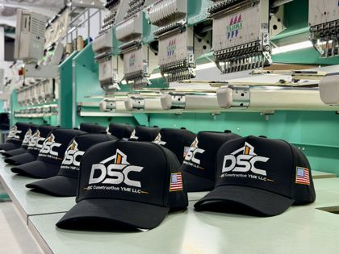
media-source/fotos/IMG_8613.jpgLote de gorras DSC sobre la mesa de bordado: volumen de producción.
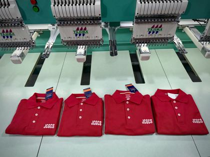
media-source/fotos/IMG_6694.jpgLote de polos rojos frente a las máquinas: cierre con escala.
Uniformes antifluido 7 fotos
salud, gastronomía y estética

media-source/fotos/Yussi-1-58.JPEGDelantal rojo con gotas de agua resbalando: demuestra el antifluido.

media-source/fotos/Yussi-1-45.JPEGDúo con conjuntos azul índigo y malva: dos modelos en una toma.

media-source/fotos/Yussi-1-54.JPEGConjunto verde agua de cuerpo entero.

media-source/fotos/Yussi-1-69.JPEGBata de laboratorio sobre uniforme azul con gorro estampado.

media-source/fotos/Yussi-1-60.JPEGChaqueta de chef blanca con ribete: gastronomía.

media-source/fotos/Yussi-1-63.JPEGConjunto vinotinto con ribete: otro color y corte.

media-source/fotos/IMG_4789.jpgChaqueta de chef verde menta con logo bordado de un cliente real.
Ropa industrial 5 fotos
pocas tomas de trabajo pesado disponibles (ver nota)

media-source/fotos/IMG_7682.JPGPantalones de trabajo con cinta reflectiva y escudo, en la planta.

media-source/fotos/IMG_7684.jpgDetalle del pantalón: cinta reflectiva y bolsillos.

media-source/fotos/IMG_5400.JPGCamisa de campo de la Contraloría de Caldas con escudo bordado.

media-source/fotos/IMG_5117.JPGIdentificación de cargo bordada (“Administrador”) en prenda oscura.

media-source/fotos/IMG_5239.JPGen usoLogo de Servicontrol en camisa de trabajo. Ya en uso.
Uniformes escolares 5 fotos
colegio Lans. La modelo parece adulta, pero conviene confirmarlo

media-source/fotos/Yussi-1-80.JPEGDetalle del escudo bordado y el ribete del polo Lans. Sin rostro.

media-source/fotos/Yussi-1-81.JPEGDetalle de la manga con ribete en los colores institucionales. Sin rostro.
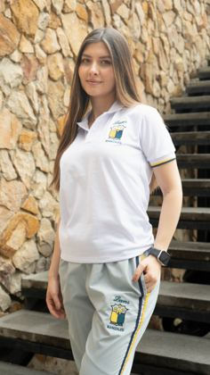
media-source/fotos/Yussi-1-79.JPEGConjunto polo + sudadera de cuerpo entero.
DUDOSA: rostro visible; confirmar mayoría de edad o recortar sin cara
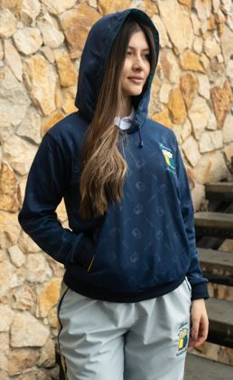
media-source/fotos/Yussi-1-83.JPEGBuzo azul con capucha y escudo.
DUDOSA: rostro visible; confirmar o recortar
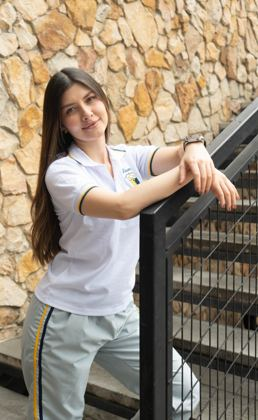
media-source/fotos/Yussi-1-77.JPEGPolo blanco y sudadera, apoyada en la baranda.
DUDOSA: rostro visible; confirmar o recortar
Servicio de bordado 8 fotos
detalles de puntada con distintas técnicas y sectores

media-source/fotos/IMG_4950.jpgCarne de Cerdo: relleno a todo color, la foto más nítida del lote.

media-source/fotos/IMG_6136.jpgCaballo en tonos grises: degradados en hilo.

media-source/fotos/IMG_5564.jpgEscudo de Colombia: alta densidad de puntadas y detalle fino.

media-source/fotos/IMG_5546.jpgParche circular de la Fundación FIMLM: bordado institucional.

media-source/fotos/IMG_7127.jpgMotociclista sobre tela oscura: ilustración compleja.

media-source/fotos/IMG_3834.JPG“Aquí Abajo” para La Vikina: hilo metalizado sobre negro.

media-source/fotos/IMG_6226.jpgToalla personalizada con perro y nombre (“Gus”): bordado para particulares.

media-source/fotos/IMG_5384.JPGEscudo de La Arcadia Panadería: logo de comercio local.
Proceso (digitalización, bordado y confección) 6 fotos
no hay fotos de confección ni de digitalización en pantalla (ver nota)

media-source/feria/IMG_3724.jpgOperaria montando la prenda en el bastidor: el oficio con personas.

media-source/feria/IMG_3717.jpgCabezal Tajima bordando sobre prenda negra.

media-source/fotos/IMG_5374.jpgBastidor con La Arcadia bajo las agujas.

media-source/fotos/IMG_4468.JPGLogo de Delicias del Gran Tinto en el bastidor (tarjeta “Primero, cada detalle” en feat/planta-fotos).

media-source/fotos/IMG_4829.jpgBastidor con prenda negra en plena máquina.

media-source/fotos/IMG_9637.jpgVarios bastidores en fila bordando a la vez.
Nosotros / planta 5 fotos

media-source/fotos/Yussi-1-2.JPGBordadora de 6 cabezales con gorras, en estudio a 7008 px: mejor resolución que la versión de 2000 px.

media-source/fotos-editadas/tajima-6-cabezales.jpgTajima de 6 cabezales que enviaste (en feat/planta-fotos).

media-source/fotos/IMG_5586.jpgFila de máquinas con lote de gorras: muestra escala.

media-source/fotos/IMG_9906.jpgCabezales trabajando sobre varias prendas a la vez.

media-source/fotos/IMG_0742.jpgGorras montadas en las bordadoras.
Hero (póster del video o respaldo) 4 fotos
el hero es un video; esto sería el póster o la imagen de respaldo
media-source/fotos/Yussi-1-2.JPGMáquina de 6 cabezales limpia y luminosa: lee bien bajo el overlay oscuro.
media-source/fotos/IMG_5586.jpgPerspectiva profunda de la planta con producción en curso.
media-source/fotos/IMG_9637.jpgBastidores en fila: dinamismo de producción.
media-source/fotos/IMG_8613.jpgGorras DSC sobre la mesa de bordado: producto y máquina.
Descartadas con motivo 26 ejemplos representativos
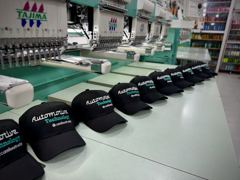
fotos/IMG_5583.jpgRáfaga de IMG_5586 (gorras Automotive); se elige la más nítida.
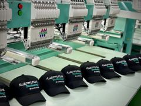
fotos/IMG_5587.jpgRáfaga de IMG_5586.
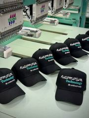
fotos/IMG_5597.jpgRáfaga de IMG_5586.
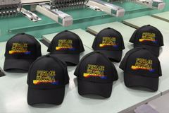
fotos/IMG_4486.jpgCasi igual a IMG_4489 (gorras Firme).
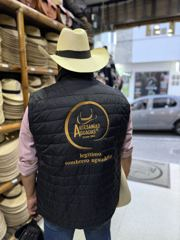
fotos/IMG_4015.jpgRáfaga de IMG_4014, menos nítida.
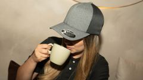
fotos/Yussi-1-86.JPEGMisma escena que Yussi-1-88.
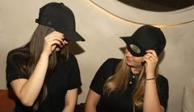
fotos/Yussi-1-89.JPEGMisma escena que Yussi-1-88.
fotos/Yussi-1-31.JPEGRáfaga del dúo; ya hay dúo en Yussi-1-45.
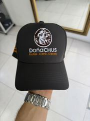
fotos/IMG_5221.JPGGorra sostenida con la mano y reloj a la vista: toma casera, poco nítida.
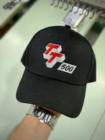
fotos/IMG_5277.jpgToma casera con la mano.
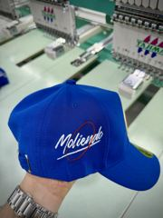
fotos/IMG_4873.jpgToma casera con la mano.
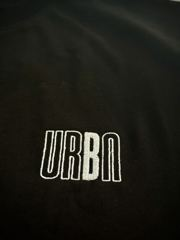
fotos/IMG_4470.jpgMuy oscura (brillo medio 30/255).
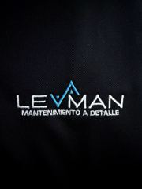
fotos/IMG_4473.jpgMuy oscura (brillo medio 16/255).
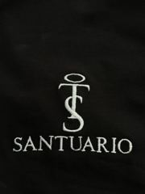
fotos/IMG_4670.JPGMuy oscura.
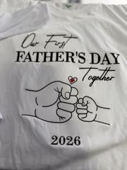
fotos/IMG_4727.jpgEstampado (no bordado), poco nítida.
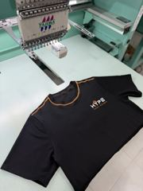
fotos/IMG_4140.jpgPoco nítida y prenda sin protagonismo.
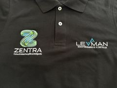
fotos/IMG_5203.jpgPolo Zentra/Levman: ya fue rechazado antes.
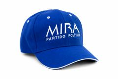
fotos/IMG_3746.PNGPNG de 1536 px (menor a 1600) y con el logo de un partido político.
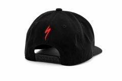
fotos/IMG_3773.PNGPNG de 1536 px, recorte sobre blanco de baja calidad.
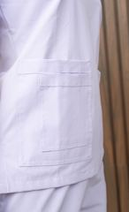
fotos/Yussi-1-13.JPEGDetalle desenfocado.
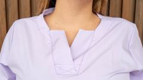
fotos/Yussi-1-23.JPEGDetalle desenfocado.
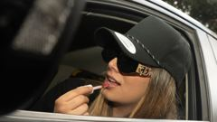
fotos/Yussi-1-104.JPEGFoto de estilo de vida sin prenda protagonista.
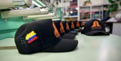
fotos/IMG_6625.jpgPanorámica recortada y suave.
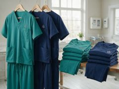
fotos-editadas/gen-scrubs.pngGenerada con IA: no es trabajo real.

feria/Buzo lans hombre.pngMockup de feria a 1200 px: render, no prenda real.
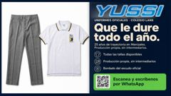
feria/pendon-horizontal.pngPieza gráfica impresa, no foto.